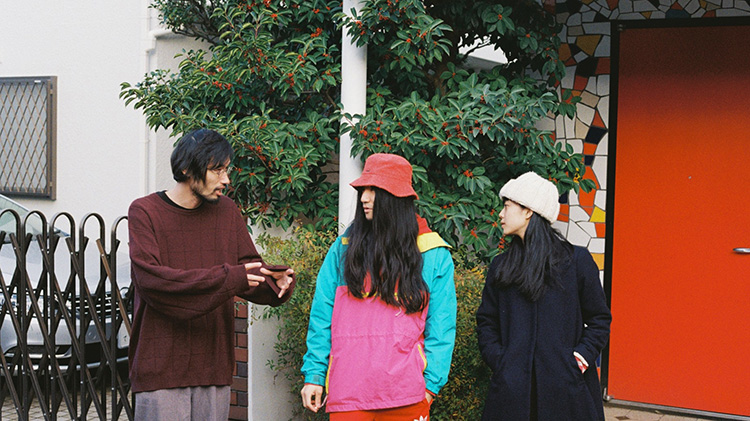
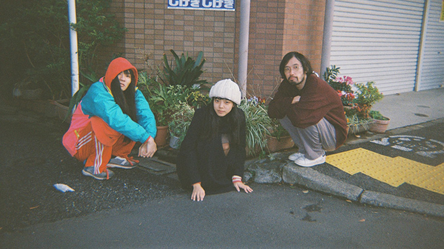
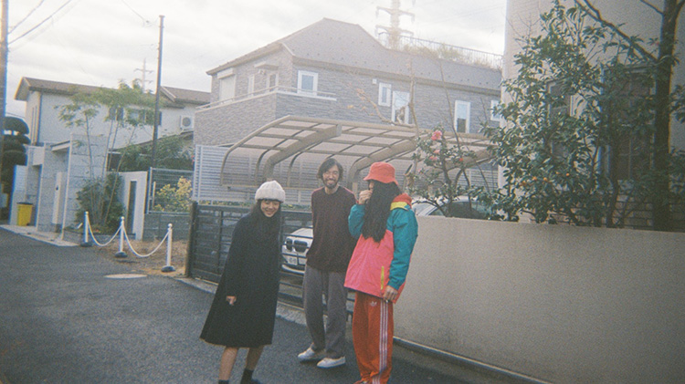
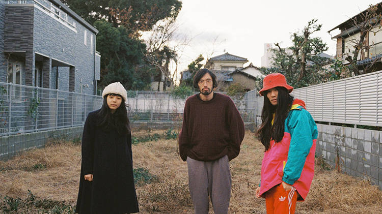
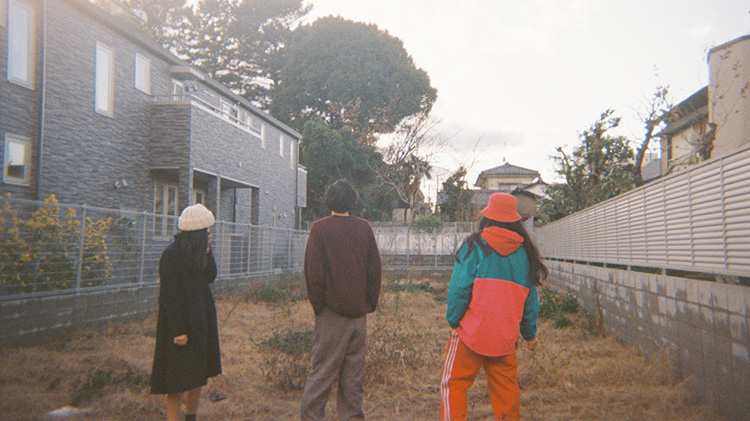

恋愛の前提となる「好き」という想いそのものを疑い、関係性の機微を丁寧に描いてきた今泉力哉監督の最新作『退屈な日々にさようならを』（第29回東京国際映画祭出品作品）が２月２５日より劇場公開される。本作は、自身が作演した初舞台『アジェについて』（2015）でも触れられた、これまで正対することに慎重だった"生き死に"がテーマ。本作の劇伴を担当したマヒトゥ・ザ・ピーポー（GEZAN）。自らが演じる牛越あみとしての劇中歌に加え、主題歌も手掛けたシンガソングライター、カネコアヤノ。そして今泉監督の３人が会して語らうのは、この映画に果たした役割は小さくないだろう音楽について。現代（いま）を生きる表現者としての現在地とは。
「悲しかったり、楽しかったりする音楽を作るのは簡単なんだけど、どちらとも言えないようなものを探りながらつくったんです。」（マヒト）
本作の劇伴を担当されているマヒトゥ・ザ・ピーポーさんと今泉監督は、どういった経緯で知り合ったんですか？
今泉：
2015年の春頃に、自主制作で長編映画を作りたいと考えていたことがあって、結局作れてないんですけど、そのための役者とスタッフを募った時に、連絡をしてきてくれた沢山の人達の中にマヒトさんがいて。「自分の音楽が合うかどうかは分からないけど、」みたいな内容のメールでしたよね？
マヒト：
はい。今泉さんの映画は観ていたんですけど、自分と同じ空気感の人とは思っていなかったんです。でも気になる感じがあって。自分が関われるような何かだとは思っていなかったけど、何故か気になる。その理由が分からないからメールをしたみたいなところもあったんです。
マヒトさんとカネコさんの２人は面識はあったんですか？
カネコ：
面識はなかったです。
マヒト：
存在は知ってたけど、喋ったのはこれが初めてだよね？
カネコ：
今日が初めて。私も高円寺で見掛けたりはしてたけど。
今泉：
映画の世界でも、狭いようで意外と知らなかったみたいなことがよくあるので、もしかしたら２人はこれが初対面になるのかもって思いながら今日を迎えたという…（笑）
カネコさんと今泉監督は以前から交流がありますよね？
今泉：
知ったのは、カネコさんが出演している『恋文Ｘ』（2014）という映画を観たのが最初で、『サッドティー』（2013）の公開前に行ったSPOTTED主催の前夜祭イベントに出て頂いた縁もあって。今思うと、カネコアヤノ、トリプルファイヤー、水曜日のカンパネラという豪華な面子…。
カネコさんは主題歌「退屈な日々にさようならを」、劇中歌「わすれてたこと」に加えて、役者としても出演されています。この作品はワークショップ映画でもありますが、オファーに至った経緯は？
今泉：
カネコさんが演じた牛越あみは、ワークショップ参加の生徒で嵌りそうな人が見つからなくて、役柄的にもポイント出演になってしまいそうだったので、だったら別で、ちゃんと歌える人に出てもらった方がいいのかもってなったんです。オファーをして、喫茶店で久しぶりにお会いした時に、おかっぱのイメージがあったけど髪が長くなっていて、「もしかしたらイメージ違うかもしれない」って内心思いながら、あらすじを口頭で説明したら、「やばーい！」って、それで大丈夫だなって（笑） 映画のタイトルはカネコさんの曲から取っているので、曲にインスパイアされて作った映画と勘違いされがちなんですけど、あの曲をエンディングに使うって決めたのも実は撮影の後で。
エンディングで流れる主題歌は映画にかなり嵌っていますよね。
マヒト：
曲もそうですけど、某シーンで、劇中で演じてるアヤノちゃんが素に返る瞬間にドキッとしますよね。虚実を行き来してる感じがしたから。映画全体からも作り手である今泉さんの空気感が滲んじゃってるところとか、役者の演技と素が出入りしているところにドキドキしました。
今泉：
撮影が終わった後で仮編集の段階のざっくりした粗いものをマヒトさんに見てもらった時に、今、言ってくれたようなこの映画の肝というかテーマみたいなものを面白がってくれて。理解出来なくて首を傾げる人もいると思うんですよね。作品の出来について自分でも不安だったけど、その反応が後押しになった部分もあって、正式に音楽をお願いすることになったんです。この映画の前に、ある仕事のために作詞作曲した適当な鼻歌をマヒトさんに曲にしてもらうために家に来てもらったことも実はあって、それは色々な事情があって、お蔵入りになったんですけど（笑）

基本的に出来上がった映像に音楽を付けていくという行程だったんですね。
今泉：
脚本から作ってもらったり、同時進行で制作していく形ではなかったですね。
カネコ：
そうだったんですね。最初に映画を観た時は、マヒト君が作ったとは意識せず、素直に映画に合った素敵な音楽だなって思った。なんの違和感も無く入ってきました。
マヒト：
それは個人的にも重視していて、「マヒトゥ・ザ・ピーポーでっせ」感を如何に出そうかって思いは常にどこかにあったりするんだけど、この映画を最初に観た時から、映画は映画だけで、音楽で飾り付けなくていいみたいな気持ちが根底にあって、自分の個性は必要ないってところからスタートしたので。
今泉：
最初に会って話したことで覚えてるのが、青葉が義人を看取るシーンについての話で、撮影時は、音を一切入れないシーンのつもりでいたんですけど、マヒトさんはここに音を付ける意味があるって言っていて、一体ここにどういう音楽つけるんだろう？ って。マヒトさんが言うには、悲しいとか寂しいみたいな音ではなくて、温かい感じというか、言葉として正確には覚えてないんですけど、そんなやり取りがあって。自分では全く想像つかなかったので、「使わないかもしれないですけど、お願いできますか？」と依頼したんです。
あのシーンで流れる音楽は紋切り型ではない解釈で、とても印象的ですね。
カネコ：
あのシーンの音楽は、愛っていう感じがした。
今泉：
今となっては、あのシーンに音楽が無いパターンは考えられないくらいになりましたから。
マヒト：
今泉さんの映画って、「嬉しい」や「悲しい」って感情が曖昧というか、そこの揺れみたいなものがあるじゃないですか。どちらとも言えないような感情。分かりやすく悲しかったり、楽しかったりする音楽を作るのは簡単なんだけど、どちらとも言えないようなものを探りながら作ったので、初めての映画音楽なのに、いきなり難しいことやってるって、自分で思ってましたね。
今泉：
『サッドティー』の音楽をお願いしたトリプルファイヤーとの作業もそうだったんですけど、自分も映画に音楽は無くていいって思ってた時期が長くあったから、映画音楽の基本やルールが分からなくて。詳しい人の話を聞くと、シーンではなく人物に沿って音楽を付けると言っていて、へぇと感心するけど、そういった選択肢すら持ってないから、音楽に関して自分から主導権を握るようなことはないんです。全く分からないので。
カネコ：
この映画についてうまく言葉にしづらくて、ずっと言わなきゃとは思ってるんですけど、普段から言葉にするのが苦手なのもあって（笑） だけど観て最初に思った感情は「これ、知ってる！」ってことだった。私もずっと考えてたことだったから、劇中歌もすぐに湧き上ってきたんです。
今泉：
劇中歌は、牛越あみとして唄う歌だから、失礼と思いながらも言葉の断片をこちらから渡してはいたけど、出来上がった曲は本当にイメージ通りで。今言ったカネコさんがずっと考えていたことっていうのは、死生観についてのことだと思うけど、それはマヒトさんと話した時にも言われました。実際に亡くなってもその事実を知らされなければ、まだ生きているんだという感覚。これは理解できない人だっていると思うけど、分かり合える２人と一緒に作れたのは良かったなって思います。

「マヒトさんのつくった、看取るシーンの音楽然り、カネコさんの劇中歌然り、直しが無かったんですよね。それがやっぱりすごくて。」（今泉）
「退屈な日々にさようならを」の主題歌起用を決めたタイミングは？
今泉：
映画タイトルにもなってるんですけど、これはカネコさんの昔の曲で、「待ち望んじゃないのになんで君はやってきたの」って歌詞が、青葉が福島を訪れる行動にリンクしてて、撮影中になんとなくこの曲を使いたいみたいな話をカネコさんにしたんだけど、そしたら「誰にも聞かれたことがないから言ったことはないけど、実はあの曲は失恋の歌じゃなくて震災の後の気持ちを歌った曲なんです」って言われて、マジか！ってなった。この映画は福島で撮影していて、震災の話は自然と絡むから、また違った角度からリンクしたなって偶然の合致を感じたんですよね。この曲は2012年に作ったと言ってましたけど、震災は意識してたんですか？
カネコ：
意識というか、はい、震災があった後に作りました。
マヒト：
実はその2012年のテイクが好きで、声とか縒れてて、音程も不安定なんだけど、映画が表現してるあやふやな感情に合ってる気がして。新たにリテイクしたものの方がポップでカタルシスがあるし、バンドとしての勢いもあるから映画のエンディングとしては相応しいと思うけど、個人的には、2012年のテイク方はアヤノちゃんのミューズ感があって好きなんです。
今泉：
なんとなく分かります。だけど、劇中歌「わすれてたこと」は弾き語りなんですけど、牛越あみとカネコさんは別という意味で、カネコアヤノとしてのエンディング曲「退屈な日々に〜」は、弾き語りではなく、バンドで録り直したテイクで良かったかなとは思います。

これに限らず、リリースして自分の手を離れていった自分の作品に対してはどういう感覚で接しますか？
マヒト：
手を離れたら人のものって感じで、どう思われてもいいかもしれないですね。この映画の音楽ももし使われなかったとしても、作るまでが楽しかったからそれで良かった。だから劇場で映画を観た時も距離を置いて観られて、気持ちよかったですね。自分の音楽という気持ちがなかったというか。
仮に、昔のGEZANの曲を使うみたいな機会があったとしたらどうですか？
マヒト：
その状況にならないと分からないですけど、世に出ている自分の曲に基本的に関心が無いんです。そもそも過去の曲を自分で聞かないですから。
カネコ：
私も過去の曲って聞かない。今回の「退屈な日々にさようならを」って曲は本当に音楽を始めたばかりの初期の曲だったのもあって…（笑）
今泉：
カネコさんの気持ちとしては、昔の音源を映画に使ったら、それを聞いてライブに来た人に、当時のように歌えないという状況が嫌なのかもしれないですよね。それは分かる気がする。例えば、バンバン音楽性が変わっていくアーティストがファンから過去の音楽性の方が良かったって言われちゃうことがあるじゃないですか。そういうことが起きる可能性もあるから。
カネコ：
ただ「退屈な日々に〜」に関しては、2012年の音源以上のものは録れないとも思ってはいて。あれはあの時にしか歌えないだろうなっていうか、「歌」としてはあれが一番良かったのも自分で分かっているんです（笑） だから意地もありました。
今泉：
あと、マヒトさんの作った、看取るシーンの音楽然り、カネコさんの劇中歌然り、直しが無かったんですよね。それがやっぱり凄くて。台詞とのバッティングの関係で微調整はあったけど、直したのはそれぐらいで。カネコさんなんて撮影の都合で、劇中歌の納期は相当タイトでしたからね。
カネコ：
劇中歌は作るの楽しかったです。
今泉：
歌詞に「昔はもっと汚い笑い方してた」ってありますけど、それ以外は割とこちらが渡した言葉から膨らました感じがあったけど、ここはカネコさんの中から湧き出てきたものだったんですか？
カネコ：
子供って、鼻水やヨダレ垂らして笑うじゃないですか。でも、大人はそういうのが恥ずかしくなって、笑い方とか話し方とか変わってきたりする。映画が地元に帰る話だったので、私も昔の友達に会うと、化粧とかして綺麗になっちゃって！とか思ったりするなぁって気持ちを書きました。昔は泥に塗れて笑ってたじゃん、みたいな（笑）
音楽をする上で、ソロワークとバンドで創作的に棲み分けている面はあるんですか？
マヒト：
出どころはどちらも同じで、スタジオで作ってもバンドでは出来ないものもあるから、そこ基準で振り分けてますね。
今泉：
どちらでも出来る曲もあるんですか？
マヒト：
考えてみると無いので、そこで分けてるかもしれないです。
カネコ：
私もバンド編成と弾き語りは半々くらいだけど、バンドは単純に楽しくて（笑）
今泉：
いいなぁ。1人は楽しくないですか？
カネコ：
1人も楽しいです（笑） ずっと1人が楽しかったんですけど、最近はバンドが楽しくて、ライブを増やしてます。
今泉：
最初は1人だったんですか？
カネコ：
最初は３人でバンドみたいな形態でした。え、あ、音楽を始めた時は１人でしたけど。
今泉：
それはそうですよね（笑） どこまで遡るかになっちゃう。いきなり「よし、音楽を始めよう。３人で」とはならないから（笑） 最初は１人ですよね。
カネコ：
（笑）
今泉：
映画って、1人で作れないから多くの人に頼ってそれがプラスになることもあるけど、拘わりがあればあるほど、特に頭に明確なイメージがある監督はたぶんきつい。自分はそういうタイプじゃないからいいんですけど。音楽を複数人で作りあげることのストレスみたいなものもあるんですか？
カネコ：
どうだろう。私は曲のアレンジ考えるのは苦手だけど、それを伝えるのも苦手だったりして（笑）
今泉：
じゃあ、伝わらなさみたいなストレスはあるにはあるんですね。
マヒト：
俺はあまりないですね。バンドだと、ライブハウス行く際に道順を考えたりせずに付いていくだけでいいからそういう楽さがあるので。1人だったら最悪ですもん。ギターの弦とかも未だに張れないんで（笑） メンバーに張ってもらってます。
カネコ：
私も（笑） 頑張って自分でやっても直されたりする。
フロントマンは感性の人が多いので、そうなるのかもしれないですね。
今泉：
自分も技術的なことが全く分からないので、周りのスタッフにお願いすることは多いですね。監督でも知識として詳しい人は指示とかも細かい。
マヒト：
映画が分業というか、技術を共有して作り上げるものということを勝手にバンドに置き換えたりして、甘えになってる部分も実はあるんです。自分は出来なくて仕方ないみたいな。「俺、駄目なんだよ、アンプ持てないんだよ〜」とか（笑）
今泉：
（笑） でも本当にそうで、自分も色んな人の力を借りてるとは思います。学生の頃って、通知表も美術とか１だったんです。芸術系の大学に進むって希望した時も親しい友達からも失笑されたんで。そういう意味で言うと、映画は人の力に頼れるから本当に映画で救われてるって思いますね。実は、映画も過去に一度は辞めてるんですけど。

「震災が起こった時に周りが激しくなって怖いなって思ったけど、でも天気がいいし、みたいに思った。ずっとそれを歌ってる。」（カネコ）
そこから繋げるわけではないですが、劇中で山下義人が、或る理由から映画作りを断念するエピソードがあって、実生活と比して創作に向かう意義みたいなものを問うてるようにも感じたんですが、それぞれの意見を伺いたいです。
今泉：
この映画でやろうとしてたことは、自分自身もそう思ってるかは断定できないんですけど、「それでも作る」みたいな人達がほとんどいないってことなんです。どんなことよりも創作を優先してる人は実際にいると思うんですけど、この映画に込めたのは、平気で辞めるし逃げてもいいってことで。それこそ震災の時なんてそうだと思うんですけど。
マヒトさんとカネコさんは震災の当時は音楽活動はされてましたか？
マヒト：
していましたね。
カネコ：
私は曲を作り始めたくらいでした。
音楽に限らず、災害などが起きた状況下で、自粛という話とは別に、ものづくりをしていることについて自問するような瞬間はありました？
今泉：
震災の時に、僕らの上の世代の人達が「全てがバレた」みたいなことを言っていて、例えば、バブル崩壊とか色んなことがあった中で社会や経済のヤバい状況とか隠されてきたけどそれが表沙汰になったみたいな。それを聞いた時に、自分はバブルの恩恵は特に受けてないし、状況が良かった頃を知らない世代だから、震災を機に映画や音楽を辞めるって意識がなかった。だから、創作に対して暗くもならなかったし、逆に、今まで皆そんな良い状況だと思ってたんだって思ったくらいでした。
マヒト：
自分も良かった時代は分からないですね。ただ、震災でスイッチが入った人は沢山いて、原発や政治の知識が無い人が悪というか、思想の無い人が駄目っていう空気が出てきて、音楽が好きだったはずの人達もSNSでそういう情報ばかりで溢れかえるみたいな状態に違和感はありました。
今泉：
音楽をやってた人が活動家みたいになっていくことですよね。
マヒト：
朝起きてカーテン開けて気持ちいいとか、さりげない当たり前の感覚はどこへいっちゃったんだろう？ って思ったりして。時代というより、そこへの寂しさが大きかったですね。その状況は現在まで続いてますけど。
今泉：
『くちばっか』（2012）って映画でも震災には触れていて、距離感は大事にしたし、分からないことは分からないでいいと思ったんです。今回の映画でも福島だから原発みたいなことを強く言うつもりはなくて、実家に帰った時の自分の実感を描いたというか。マヒトさんが言ったみたいな当たり前のことを無くしてまで、深刻にしてしまうとそれこそ作り物っぽくなると思うので。
マヒト：
当たり前のことに目線を持つことの方がオルタナティヴな気がしていて。新しい何かを主張するより、当たり前のことにスポットする方が挑戦だなって思える周囲のムードみたいなものが今あって。最初の話に戻るんですけど、今泉さんの今までの作品は好きなんだけど、自分が普段抱いてる真ん中の感覚とド嵌りしてるとは思っていなくて、でも気になるのは、今回の映画でも合点のいくところがあったんですけど、言葉を変えると、今話したみたいな、最終的に暮らしに帰ってくるみたいなところ。死生観に関しても、青葉なりの主張を口に出してバラしてしまう弱さがある。例えば、ラース・フォン・トリアーみたいに、あのまま狂気に走り切るっていう面白さもそれはそれであると思うんです。
今泉：
確かに嘘を隠すことで、もっと重くはできますからね。
マヒト：
梶原にしてもそうで、決められないとか筋を通せない、人間の業というか、言わば、生活みたいなものにすごくオルタナティヴを感じていて、そこに惹かれたんだと思うんです。

世の中のムードが社会思想的なものに振り切っていることで、「オルタナティヴ」の価値観が逆転してるってことですよね。
マヒト：
そっちの方に逆に挑戦を感じますね。
今泉：
興味があることがどんどんそっちになってる気がして、映画を作った直後はすっからかんの状態になるんですけど、次を作るとなると、どんどんシンプルになってるんです。「普通」ではドラマを生み出しづらいんだけど。今まで恋愛とかで散々遊んできたけど…
マヒト：
え、それは映画の中でですよね？
今泉：
そうです！遊んでないです（笑）
カネコ：
びっくりした（笑） 今泉さんが遊んできたみたいに言うから。
今泉：
違う、違う。映画で浮気の話とかで遊んできたけど、そうではない、何もしていないもっと普通の人の話をやりたくなっているんです。
マヒト：
世の中の状況がエグくなればなるほど、そういうものがオルタナティヴになっていくんですよ、たぶん。だから、今泉さんが思ってることは間違ってないと思います。
自分自身がつくる音楽もそちらに向かってる感触はあるんですか？
マヒト：
こうやって話してるくらいだからそうなんだと思います。生活感のあるというか「珈琲を飲んで〜」みたいな曲があるわけじゃないんですけど。
今泉：
「珈琲を飲んで〜」みたいな映画を自分も撮ってはいないです（笑） カネコさんは「珈琲を飲んで〜」みたいな曲を歌ってそう。
カネコ：
歌詞に珈琲が出てくる曲はないけど…（笑）
今の話で言うと、カネコさんは本能的にそれをやっていそうな人ですよね。
カネコ：
そうですね。オルタナティヴに感じない。普通じゃんって思う。私はですけど。震災が起こった時に周りが激しくなって怖いなって思ったけど、でも天気がいいし、みたいに思った。そんな自分に逆にコンプレックスを感じたくらいだったから。でもずっとそれを歌ってる。
マヒト：
だからこの映画でアヤノちゃんが演じるシーンが象徴してることって、そういうところから来てるんだろうなって思う。
今泉：
そうかもしれないですね。何でなんだろうって分からなかった部分もあったんだけど、ただ寝転がってるようだけど、誰がやっててもああならなかったんだろうな。本業の役者だとカット前後の動きも意識的になると思うけど、カット直後に自然に枝毛を弄り始めましたから（笑）
カネコ：
気付いたら枝毛を見てました（笑）
マヒト：
そういうアヤノちゃんが象徴する通り、本筋ではない何気ない生活を描いてるシーンにもとても惹かれるところが沢山ある映画だと思います。